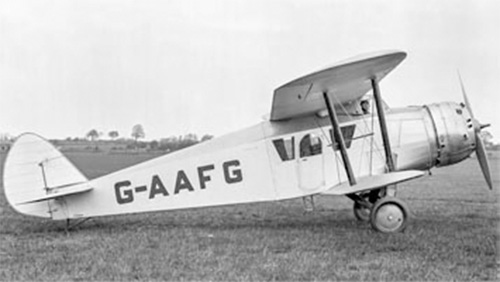

Bristol 110

- Разработчик: Bristol
- Страна: Великобритания
- Первый полет: 1929
- Тип: Транспортный самолет
Транспортный самолет Bristol Type 110 был спроектирован под новый 220-сильный двигатель воздушного охлаждения Bristol Titan. Закрытая пассажирская кабина вмещала четырех человек. В таком виде самолет (получивший регистрационный номер G-AAFG) совершил свой первый полет 25 октября 1929 года. К этому времени оказался готов более новый и совершенный двигатель Bristol Neptune мощностью 315 л.с. Было решено переделать самолет под этот двигатель, увеличив пассажировместимость до пяти человек. Новая модификация самолета, получившая неофициальное обозначение Bristol Type 110A Five Seater, была передана в Филтон для испытаний.
В одном из первых полетов самолет разбился. В выводах комиссии значилось, что для обеспечения надежности полетов требовалась значительная доработка самолета. К сожалению этого сделать не удалось, так как фирма Bristol была загружена заказами на производство истребителей Bulldog и доводкой многочисленных военных прототипов. В связи с этим, многообещающий гражданский проект был закрыт. Единственный восстановленный экземпляр продолжал полеты уже как самолет Class B registration R-4 до февраля 1931 года, когда после очередной аварии было решено его не восстанавливать
| Летно технические характеристики | |
|---|---|
| Модификация | Bristol 110 |
| Размах крыла максимальный, м | 12.34 |
| Длина, м | 10.21 |
| Высота, м | 3.10 |
| Площадь крыла, м2 | 36.14 |
| Масса, кг | |
| - пустого самолета | 1057 |
| - нормальная взлетная | 1978 |
| Тип двигателя | 1 ПД Bristol TitanI |
| Мощность, л.с. | 1 х 220 |
| Максимальная скорость у земли, км/ч | 201 |
| Практическая дальность, км | |
| Практический потолок, м | |
| Экипаж, чел | 1 |
| Полезная нагрузка: | 4 пассажира |